DPDFreduction dialog.
Table of Contents
| Name | Direction | Type | Default | Description |
|---|---|---|---|---|
| RunNumbers | Input | string | Sample run numbers | |
| Vanadium | Input | string | Preprocessed vanadium file. Allowed extensions: [‘.nxs’] | |
| EmptyCanRunNumbers | Input | string | Empty can run numbers | |
| EnergyBins | Input | string | 1.5 | Energy transfer binning scheme (in meV) |
| MomentumTransferBins | Input | string | Momentum transfer binning scheme (in inverse Angstroms) | |
| NormalizeSlices | Input | boolean | False | Do we normalize each slice? |
| CleanWorkspaces | Input | boolean | True | Do we clean intermediate steps? |
| OutputWorkspace | Output | MatrixWorkspace | S_Q_E_sliced | Output workspace |
Reduction algorithm for powder or isotropic data taken at the SNS/ARCS beamline.
Its purpose is to yield a  structure factor from which a dynamic pair
distribution function 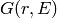 can be obtained via the
Dynamic PDF interface.
structure factor from which a dynamic pair
distribution function 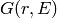 can be obtained via the
Dynamic PDF interface.
 is the incident energy.
is the incident energy. and
and  are estimated with algorithm
ConvertToMDMinMaxLocal.
for each energy bin, independent of each other. which can serve as
input for the Dynamic PDF interface.
are estimated with algorithm
ConvertToMDMinMaxLocal.
for each energy bin, independent of each other. which can serve as
input for the Dynamic PDF interface.The ARCS instrument has two gaps at particular  angles due to arrangement
of the banks
angles due to arrangement
of the banks

The gaps lead to empty bins in the 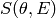 histogram which in turn generate
significant errors in the final for certain values of  .
To prevent this we carry out a linear interpolation in
at the blind-strip angles.
.
To prevent this we carry out a linear interpolation in
at the blind-strip angles.
If user desires to plot the OutputWorkspace with Mantid’s slice viewer, user
should choose the “# Events Normalization” view. The last step in the reduction
is performed by executing
ConvertMDHistoToMatrixWorkspace,
which requires NumEventsNormalization. Our input workspace has as many spectra
as instrument detectors. Each detector has a 2D binning in
and  .
Each detector is at a particular angle, thus
and are related by:
.
Each detector is at a particular angle, thus
and are related by:
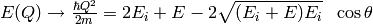
That means that only 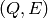 bins satisfying the above condition have counts.
Thus for detector  we have number of counts
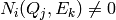 if the 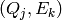 pair satisfy
the above condition. This represents a trajectory in 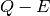 space.
we have number of counts
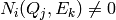 if the 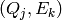 pair satisfy
the above condition. This represents a trajectory in 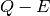 space.
When we execute
ConvertMDHistoToMatrixWorkspace
with binning  and E binning
and E binning  ,
we go detector by detectory and we look at the fragment of the
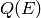 trajectory enclosed in the cell of Q-E phase space
denoted by the corners , 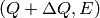,
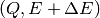 and 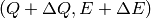.
Thus we have for detector to look at the pairs
within this cell for detector , with associated
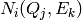 counts and associated scattering cross-section:
,
we go detector by detectory and we look at the fragment of the
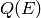 trajectory enclosed in the cell of Q-E phase space
denoted by the corners , 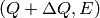,
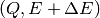 and 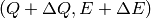.
Thus we have for detector to look at the pairs
within this cell for detector , with associated
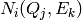 counts and associated scattering cross-section:
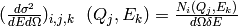
The scattering cross-section in the aforementioned cell of dimensions
x is the average of all
the scattering cross sections:
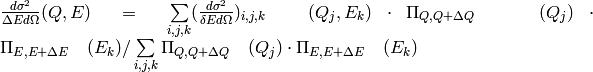
where 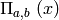 is the boxcar function
Categories: Algorithms | Inelastic\Reduction
Python: DPDFreduction.py
{kind=link}